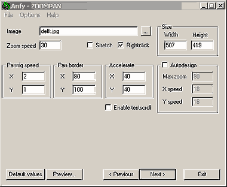

|
This applet periodically changes the hue of a selected
image.
[For more technical
information about the available parameters, click here.]
Most parameters are self-explanatory and you can
always see brief description of each parameter by moving the mouse
pointer over the wizard.

Basic setting
Select the Image file to load, and choose the applet Width
and Height. If you intend to take advantage of panning function,
then the applet size has to be smaller than the image size. Select
Enable textscroll, if necessary.
Zoom and Pan
Zoom speed value is used to set the zooming speed of the image
when you click a
mouse button. You can use integers values greater than 0 for it.
Panning Speed XY values control the x and y speeds of the
camera. Using the Pan Border XY, you can determine where
to start the horizontal border sensibility for the mouse movements,
from both left and right sides. The values ranges from 0 to width/2.
For example, if your applet width is 500 you can choose a value
between 0 and 250. Accelerate XY values control the acceleration
of panning speed. If the Autodesign option is checked, the
zooming and panning is automatically controled according to the
XY speeds of the camera and Max Zoom factor. If the
Rightclick box is checked, right-clicking the mouse button
zooms out the image. If unchecked, double-clicking the left mouse
button does the same. Needless to say, right-clicking means nothing
for Mac users. Finally you can use the Stretch option if
the aspect-ratio of the applet is different from the aspect-ratio
of the image. If checked, the image will be stretched to fit the
applet size, else the image will be adapted to the applet.
Proceed to the textscroll
menu if you have checked the textscroll box; otherwise go to
the expert menu.
|